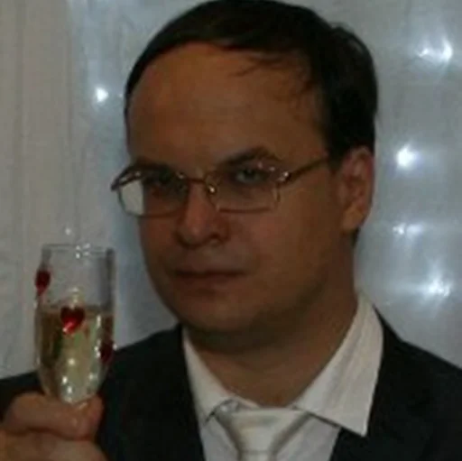
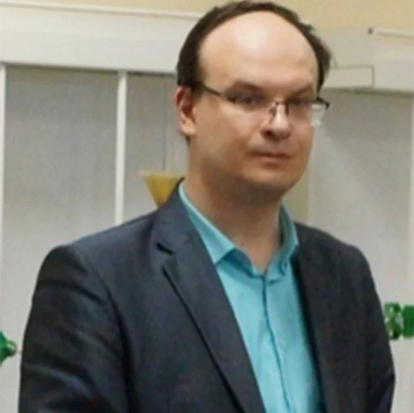
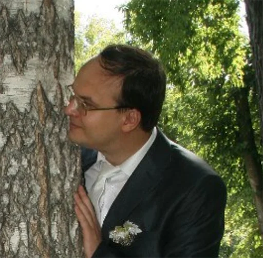

История о том как я сдавал Ситчихина

Сдать сессию Ситчихину Олегу Васильевичу — это то еще испытание, которое не забудешь никогда. Предметы у него серьезные: Элементы высшей математики и Дискретная математика. Казалось бы, обычные технические дисциплины, но в его руках они превратились в настоящий квест на выживание.

Я потратил колоссальное количество времени, чтобы просто получить допуск к экзамену. Олег Васильевич категорически не хотел принимать практические работы. Сколько раз я сидел ночами, выводя матрицы, графы и ряды, а на следующей он находил малейшую неточность, морщился и откладывал практику со словами: «Иди переделывай, это не годится». Каждое решение, которое у других преподавателей приняли бы с первого раза, у него превращалось в испытание на выживание. Я буквально жил в дне сурка: сначала высшая математика, сразу за ней дискретка, и так по кругу. Допуск я выгрыз, но это было только начало.
Сам экзамен по ЭВМ и ДМ я сдавал только с третьего раза. Первые две попытки разбивались о его железную логику и вопросы из разряда «теоретический минимум, который вы обязаны знать». Третья попытка стала для меня ва-банк: я перерыл всё, даже то, что не спрашивали, и доказывал каждую формулу. Когда он наконец сказал «сдал», я почувствовал, как с плеч упала гора. Но внутри осталась глубокая усталость и понимание: если выжил у Ситчихина — выживешь где угодно.